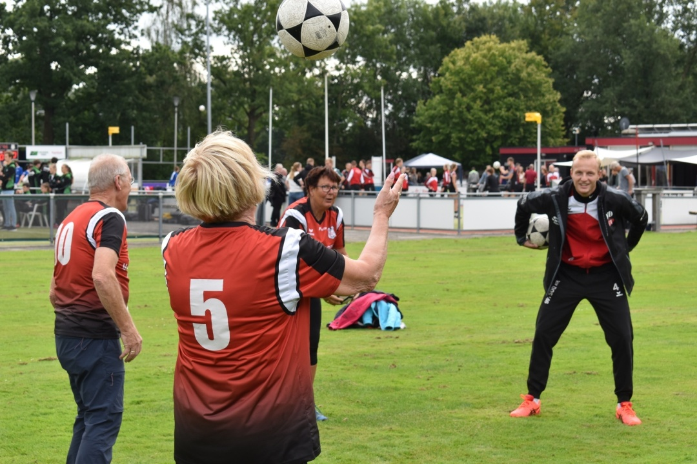

<div class="static-page-background">
    <div class="text-block">
        
        <div class='paragraph'>
            <!-- <div class="title">VOORWOORD</div> -->
            <div class='title'>KORFBAL IS VOOR IEDEREEN</div>
            
            <div class='paragraph-title'> WALKING KORFBAL<a> BIJ DOS’46</a></div>
            Dit seizoen starten we bij DOS’46 met walking korfbal. Walking korfbal is een aangepaste spelvorm van onze mooie
            korfbalsport die wordt aangeboden voor de oudere doelgroep. Walking korfbal biedt deze oudere doelgroep de mogelijkheid om te bewegen en te werken aan een gezonde
            levensstijl. Daarnaast is walking korfbal ook een belangrijke
            sociale aangelegenheid. Voor- en nagenieten/-praten onder
            het genot van een lekker bakkie koffie.
            <br><br>
            <b>De belangrijkste aanpassingen zijn:</b>
            <ul>
                <li>Niet rennen</li>
                <li>Op 1/4 van het veld in de breedte</li>
                <li>4 tegen 4</li>
                <li>Schieten mag altijd</li>
                <li>Niet springen bij het schieten</li>
            </ul>
            De trainingen staan onder begeleiding van een trainer,
            een begeleider vanuit Old Stars en een fysiotherapeut
            en worden op de dinsdagochtenden georganiseerd.
            Wil jij nou meer weten? Of twijfel je niet en wil je meedoen?
            Meld je dan nu aan via de <a class='link' href='https://www.dos46.nl/walking-korfbal/' target="_">website.</a> 
            <br> <br>
            
            <div class='paragraph-title'> G-KORFBAL<a> BIJ DOS’46</a></div>
            Bij DOS’46 zijn we druk bezig om volgend jaar te starten met
            G-Korfbal. Bij DOS’46 vinden we dat korfbal voor iedereen
            is, dus ook voor mensen met een verstandelijke beperking.
            De verstandelijke beperking houdt in dat de betrokkenen
            een IQ van 75 of lager hebben en vaak diagnoses hebben
            als Syndroom van Down, ADHD, PDD NOS of autisme. 
            <br><br>
            In het team achter
            G-korfbal bij DOS’46 zitten: <br>
            Esmee ten Kate, <br>
            Manouk ten Kate, <br>
            Tessa Lap, <br>
            Mart Vrielink <br>
            en Marlous Keizer. <br><br>
            Lijkt het jou leuk om deze initiatiefnemers te gaan
            helpen met het opzetten van G-korfbal bij DOS’46?
            Stuur dan een mailtje met je contactgegevens naar
            <a style='color:#E0071C'><b>breedte@dos46.nl</b></a> en er wordt spoedig contact
            met je opgenomen.
        
        </div>
    </div>


</div>
